向量微積分
📌 本章要解決的核心問題
向量微積分（vector calculus）是微積分從一維推廣到高維的終極形式。在前幾章我們學會了對多變數函數微分和積分，但現實世界中的力場（重力場、電磁場）、流體速度場、熱流場——這些都是向量場（vector field）。本章回答一個核心問題：如何在向量場中進行積分？
🔑 關鍵概念（10 條）
- 向量場：每個點對應一個向量的映射——$\mathbf{F}(x,y) = \langle P(x,y), Q(x,y) \rangle$
- 線積分：沿著曲線對向量場或純量函數積分——$\int_C \mathbf{F} \cdot d\mathbf{r}$
- 保守場與位勢函數：若 $\mathbf{F} = \nabla f$，則 $\mathbf{F}$ 是保守場，$f$ 是位勢函數
- 線積分基本定理：$\int_C \nabla f \cdot d\mathbf{r} = f(\mathbf{r}(b)) - f(\mathbf{r}(a))$
- 格林定理：將平面上的線積分轉換為二重積分——$\oint_C P\,dx + Q\,dy = \iint_D (Q_x - P_y)\,dA$
- 散度：向量場在一個點的「流出量」——$\text{div}\,\mathbf{F} = \nabla \cdot \mathbf{F}$
- 旋度：向量場在一個點的「旋轉趨勢」——$\text{curl}\,\mathbf{F} = \nabla \times \mathbf{F}$
- 曲面積分：在二維曲面上對向量場或純量函數積分——$\iint_S \mathbf{F} \cdot d\mathbf{S}$
- 斯托克斯定理：$\oint_C \mathbf{F} \cdot d\mathbf{r} = \iint_S (\nabla \times \mathbf{F}) \cdot d\mathbf{S}$
- 散度定理：$\iint_S \mathbf{F} \cdot d\mathbf{S} = \iiint_E (\nabla \cdot \mathbf{F})\,dV$
🧭 本章推理地圖
向量場（§6.1）描述空間中每一點的力／流速／梯度 → 線積分（§6.2）計算沿曲線的累積效應（功、環流量） → 保守場（§6.3）：若 ∇f = F，則線積分只取決於端點 → 路徑無關 → 格林定理（§6.4）將平面區域上的二重積分轉為邊界上的線積分 → 散度測量「源」、旋度測量「渦旋」（§6.5） → 曲面積分（§6.6）計算通過曲面的通量（flux） → 斯托克斯定理（§6.7）推廣格林定理到曲面：∮F·dr = ∬curl F·dS → 散度定理（§6.8）將體積分轉為封閉曲面積分：∭div F dV = ∬F·dS → 三大定理（格林、斯托克斯、散度）構成 高維微積分基本定理的完整體系
6.1 向量場（Vector Fields）
向量場（vector field）是向量微積分最核心的概念。一個向量場 $\mathbf{F}$ 在 $\mathbb{R}^2$ 中是一個映射，將定義域 $D$ 中的每個點 $(x,y)$ 對應到一個二維向量 $\mathbf{F}(x,y) = \langle P(x,y), Q(x,y) \rangle$。直覺上，向量場就是一張「向量的地圖」——在每個位置告訴你方向和大小。
$\mathbf{F}(x,y) = P(x,y)\,\mathbf{i} + Q(x,y)\,\mathbf{j}$ （在 $\mathbb{R}^2$ 中）
$\mathbf{F}(x,y,z) = P(x,y,z)\,\mathbf{i} + Q(x,y,z)\,\mathbf{j} + R(x,y,z)\,\mathbf{k}$ （在 $\mathbb{R}^3$ 中）
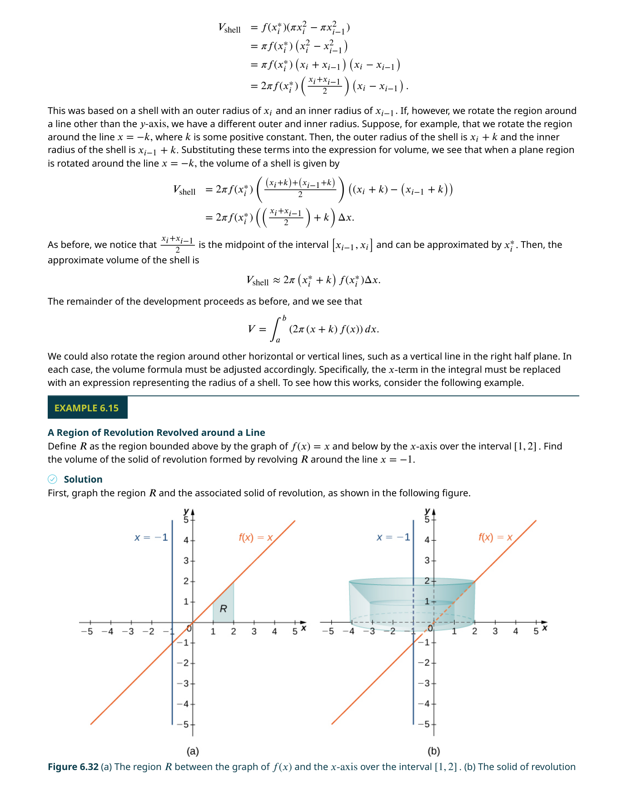
向量場在物理學中無所不在：重力場描述每個點受到的引力方向和大小；電場描述電荷在空間中產生的力；速度場描述流體（水、空氣）在每個點的速度。圖 6.2 展示了兩個典型例子：(a) 兩個天體產生的重力場，(b) 河流表面的速度場。
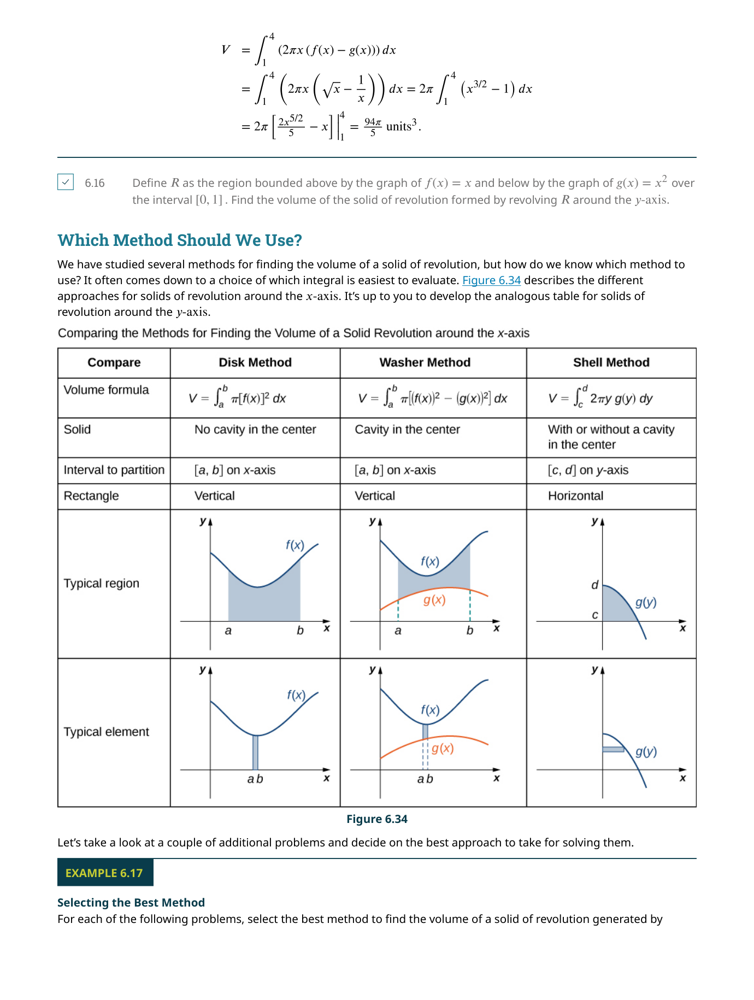
徑向場與旋轉場
本章重點關注兩類平面向量場：徑向場（radial field）和旋轉場（rotational field）。在徑向場中，所有向量要麼直接指向原點，要麼直接遠離原點，且向量大小只取決於到原點的距離。典型的徑向場如 $\mathbf{F}(x,y) = \langle x, y \rangle$，每個向量都垂直於經過該點的圓。
旋轉場則相反：向量與圓相切（而不是垂直），所有向量沿著順時針或逆時針方向。例如 $\mathbf{F}(x,y) = \langle -y, x \rangle$ 是一個逆時針旋轉場——你可以驗證 $\mathbf{F} \cdot \langle x, y \rangle = -yx + xy = 0$，所以每個向量都垂直於徑向向量，即與圓相切。
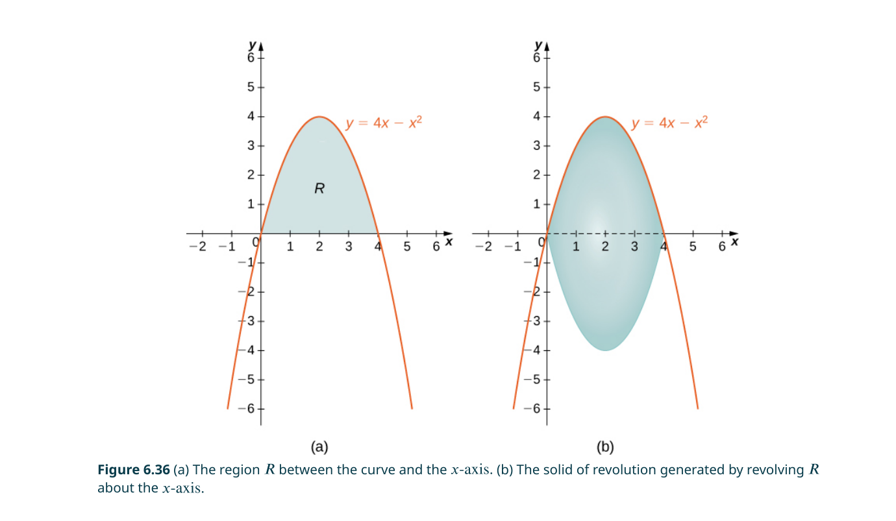
向量場的「圖形」需要四維空間（2D 定義域 + 2D 值域），因此我們改為在平面上選取樣本點，在每個點畫出對應的向量。關鍵技巧：選取足夠多的點以呈現整體形狀，但不要多到讓畫面變成混亂的一團。
三維向量場與梯度場
向量場在 $\mathbb{R}^3$ 中的定義類似，只是多了第三個分量函數。三維向量場可以模擬空間中的重力場、電磁場，或整條河流（而非僅表面）的流動。三維向量場更難視覺化，但原理相同：在每個八分區（octant）中選取樣本點繪製向量。
一個特別重要的向量場類型是梯度場（gradient field），也稱為保守向量場（conservative vector field）。如果存在一個純量函數 $f$（稱為位勢函數 potential function）使得 $\mathbf{F} = \nabla f$，則 $\mathbf{F}$ 是保守場。重力場和靜電場都是保守場——這意味著在這些場中能量守恆。
若 $\mathbf{F} = \nabla f = \langle f_x, f_y \rangle$（$\mathbb{R}^2$）或 $\mathbf{F} = \nabla f = \langle f_x, f_y, f_z \rangle$（$\mathbb{R}^3$），則 $\mathbf{F}$ 是保守向量場，$f$ 是其位勢函數。
在某些物理文獻中，位勢函數定義為 $\mathbf{F} = -\nabla f$（帶負號），而不是 $\mathbf{F} = \nabla f$。這只是約定不同——數學上通常使用後者，物理（特別是電磁學）常用前者。兩者本質相同，只是位勢函數差一個負號。
交叉偏導數性質
保守向量場有一個重要的必要條件：交叉偏導數性質（Cross-Partial Property）。若 $\mathbf{F} = \langle P, Q \rangle$ 在 $\mathbb{R}^2$ 中是保守的，則必定有 $\frac{\partial P}{\partial y} = \frac{\partial Q}{\partial x}$。在三維中，類似地有 $P_y = Q_x$、$P_z = R_x$、$Q_z = R_y$。這個性質來自 Clairaut 定理：因為 $P = f_x$ 且 $Q = f_y$，所以 $P_y = f_{xy} = f_{yx} = Q_x$。
📝 範例 6.1：計算指定點的向量
給定 $\mathbf{F}(x,y) = \langle x^2y, x+y \rangle$，求對應於點 $(1,2)$ 的向量。解：代入 $x=1, y=2$：$\mathbf{F}(1,2) = \langle 1^2 \cdot 2,\; 1+2 \rangle = \langle 2, 3 \rangle$。所以在點 $(1,2)$ 處的向量是從該點出發指向 $(3,5)$ 的箭頭。
📝 範例 6.12：證明向量場非保守
證明旋轉向量場 $\mathbf{F}(x,y) = \langle -y, x \rangle$ 不是保守場。解：計算 $P_y = \frac{\partial}{\partial y}(-y) = -1$，$Q_x = \frac{\partial}{\partial x}(x) = 1$。由於 $P_y \neq Q_x$，由交叉偏導數性質，$\mathbf{F}$ 不可能是保守場。
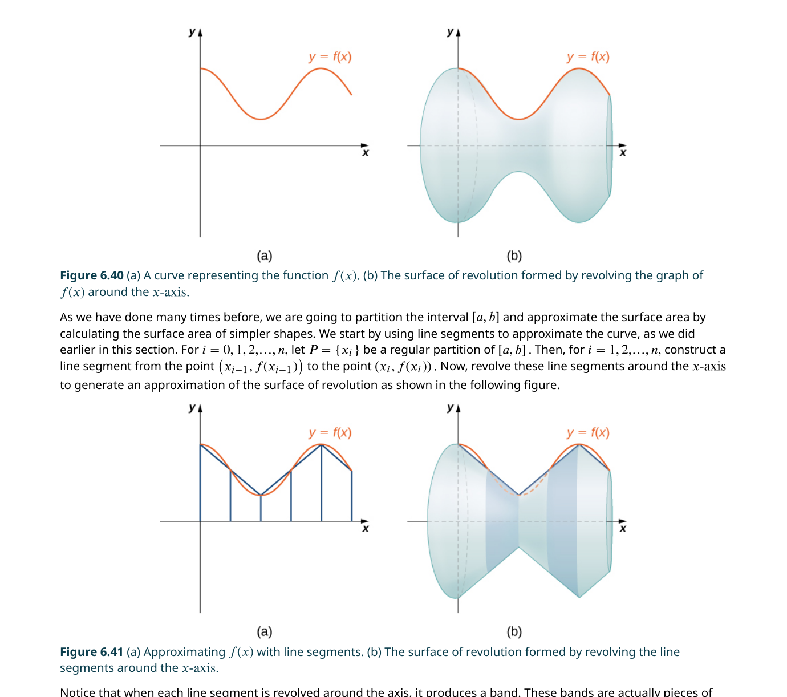
三維空間中的重力場由牛頓萬有引力定律給出：$\mathbf{F}(x,y,z) = -\frac{Gm_1m_2}{r^2}\mathbf{\hat{r}}$，其中 $r = \sqrt{x^2+y^2+z^2}$ 是距離，$\mathbf{\hat{r}}$ 是指向外的單位徑向向量。負號表示力是吸引力（指向原點）。這是一個徑向場在三維的推廣。
🎮 互動模型：向量場可視化
切換不同向量場，觀察旋轉場與發散場的箭頭分佈差異。
6.2 線積分（Line Integrals）
傳統的定積分 $\int_a^b f(x)\,dx$ 的積分區域是 $x$ 軸上的一段區間。但假如我們想沿著平面上或空間中的任意曲線進行積分呢？這就是線積分（line integral）的用武之地。線積分有兩種：純量線積分（scalar line integral）對純量函數沿曲線積分，以及向量線積分（vector line integral）對向量場沿曲線積分。
純量線積分
純量線積分 $\int_C f(x,y)\,ds$ 將曲線 $C$ 分割成小段，每段長度為 $\Delta s_i$，取樣本點並計算 $f \cdot \Delta s_i$ 的和，然後取極限。幾何意義：若 $f(x,y) \geq 0$，則 $\int_C f\,ds$ 是以曲線 $C$ 為底、高度為 $f$ 的「幕簾」的面積。
純量線積分的一個重要性質是與參數化無關（parameterization-independent）：只要曲線被恰好遍歷一次，無論你如何參數化它，積分值都不變。這與一維積分的變數變換類似。
$ds = |\mathbf{r}'(t)|\,dt$ 是線積分中最關鍵的概念。它告訴我們：沿曲線移動一個微小距離 $ds$ 對應於參數 $t$ 改變 $dt$，兩者的比例是 $|\mathbf{r}'(t)|$（瞬時速率）。這將曲線上的積分轉換為 $t$ 變數的普通定積分。
向量線積分
向量線積分 $\int_C \mathbf{F} \cdot d\mathbf{r}$ 計算的是力場 $\mathbf{F}$ 沿曲線 $C$ 對粒子所做的功（work）。與純量線積分不同，向量線積分依賴於曲線的定向（orientation）：反向行走會改變積分值的正負號——這符合物理直覺（上山時重力做負功，下山時重力做正功）。
計算公式：若 $C$ 由 $\mathbf{r}(t)$（$a \leq t \leq b$）參數化，則
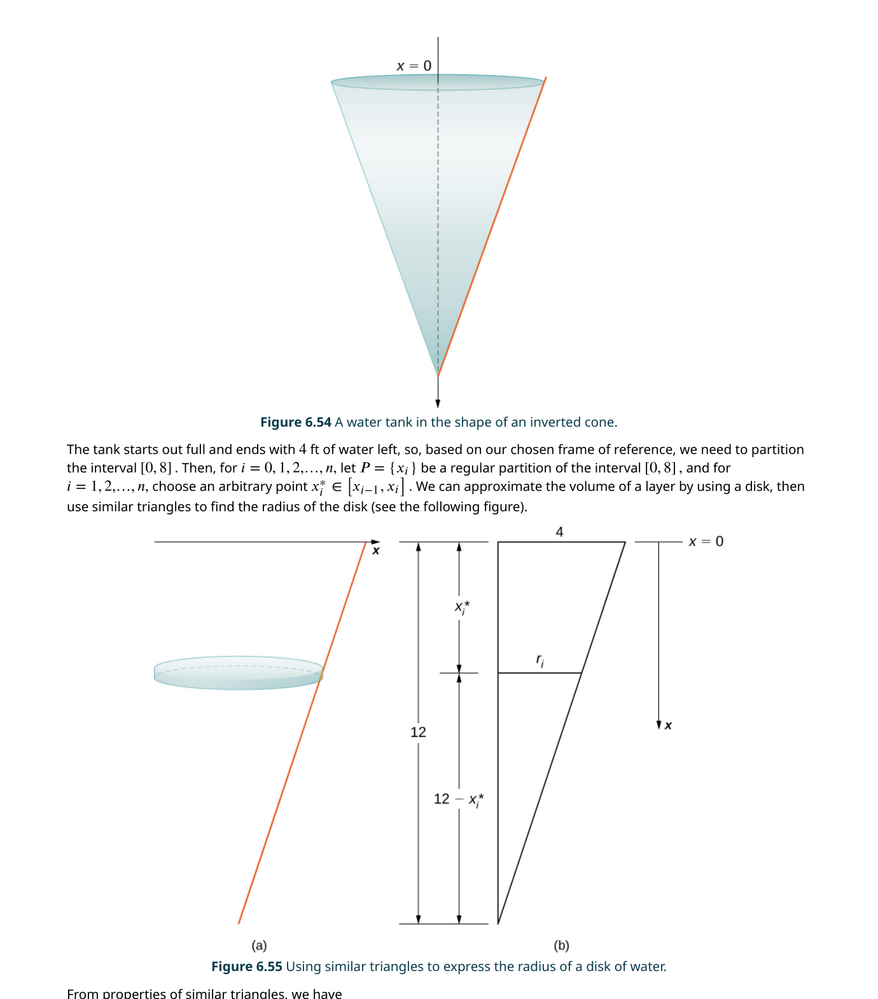
$\int_C f\,ds$ 是純量線積分，結果是一個數。$\int_C \mathbf{F} \cdot d\mathbf{r}$ 是向量線積分，結果也是一個數（內積後是純量）。兩者的關鍵區別：純量線積分與定向無關，向量線積分與定向有關。注意符號 $d\mathbf{r} = \langle dx, dy, dz \rangle$ 是一個向量微分，而不是純量 $ds$。
通量與環流
兩個與線積分密切相關的重要概念是通量（flux）和環流（circulation）。通量 $\int_C \mathbf{F} \cdot \mathbf{N}\,ds$ 計算流體穿越曲線 $C$ 的速率——將切向量 $\mathbf{T}$ 換成法向量 $\mathbf{N}$。環流 $\oint_C \mathbf{F} \cdot d\mathbf{r}$ 則是沿封閉曲線的向量線積分，衡量流體繞曲線的「旋轉傾向」。
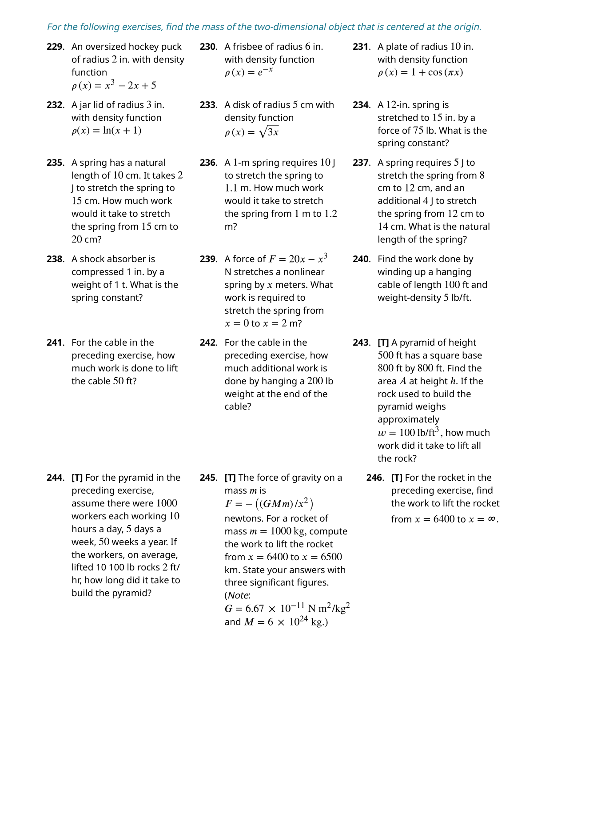
通量和環流將在本章後續定理中反覆出現。格林定理就是將封閉曲線上的環流（或通量）轉換為區域上的二重積分。
📝 範例 6.15：計算純量線積分
計算 $\int_C (x^2 + y^2 + z^2)\,ds$，其中 $C$ 是螺旋線 $\mathbf{r}(t) = \langle \cos t, \sin t, t \rangle$，$0 \leq t \leq 2\pi$。解：$f(\mathbf{r}(t)) = \cos^2 t + \sin^2 t + t^2 = 1 + t^2$。$\mathbf{r}'(t) = \langle -\sin t, \cos t, 1 \rangle$，$|\mathbf{r}'(t)| = \sqrt{\sin^2 t + \cos^2 t + 1} = \sqrt{2}$。因此 $\int_C (x^2+y^2+z^2)\,ds = \int_0^{2\pi} (1+t^2)\sqrt{2}\,dt = \sqrt{2}[t + \frac{t^3}{3}]_0^{2\pi} = \sqrt{2}(2\pi + \frac{8\pi^3}{3})$。
📝 範例 6.18：計算向量線積分
計算 $\int_C \mathbf{F} \cdot d\mathbf{r}$，其中 $\mathbf{F}(x,y) = \langle y, -x \rangle$，$C$ 是上半圓 $\mathbf{r}(t) = \langle \cos t, \sin t \rangle$，$0 \leq t \leq \pi$。解：$\mathbf{F}(\mathbf{r}(t)) = \langle \sin t, -\cos t \rangle$，$\mathbf{r}'(t) = \langle -\sin t, \cos t \rangle$。$\mathbf{F} \cdot \mathbf{r}' = \sin t(-\sin t) + (-\cos t)(\cos t) = -\sin^2 t - \cos^2 t = -1$。因此 $\int_0^\pi (-1)\,dt = -\pi$。負號表示向量場與曲線方向「對抗」。
6.3 保守向量場（Conservative Vector Fields）
保守向量場是向量微積分中最優雅的一類場。如果 $\mathbf{F} = \nabla f$，則 $\mathbf{F}$ 是保守的（conservative），而 $f$ 是位勢函數（potential function）。保守場的核心特徵是：線積分與路徑無關（path-independent）——只依賴於起點和終點的位勢函數值。
曲線與區域的幾何分類
在深入研究保守場之前，我們需要定義一些幾何概念。一條封閉曲線（closed curve）的起點與終點相同。一條簡單曲線（simple curve）不會與自身相交。同時滿足兩者的稱為簡單封閉曲線（simple closed curve）。一個連通區域（connected region）是指區域內任意兩點都可用一條完全在區域內的路徑連接。一個單連通區域（simply connected region）是連通且「沒有洞」的區域——任何在區域內的簡單封閉曲線都可連續縮成一個點而不離開區域。
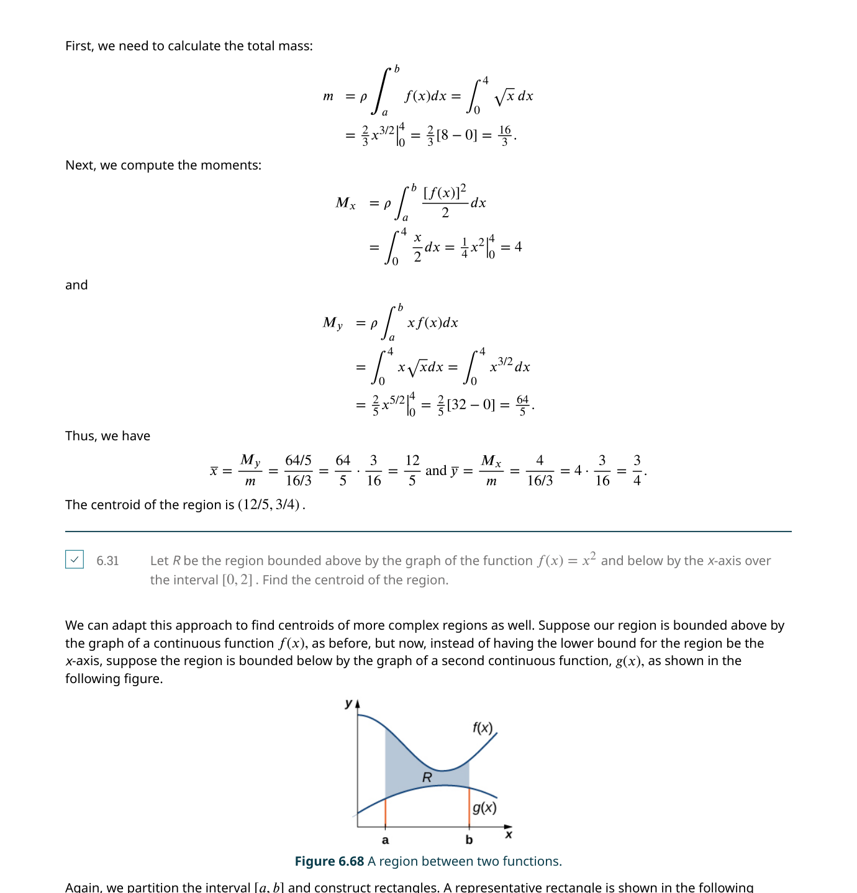
線積分基本定理
這是本章最重要的定理之一。它將一維微積分基本定理推廣到高維：
這個定理的意義怎麼強調都不為過。在一維中，$\int_a^b f'(x)\,dx = f(b) - f(a)$；在高維中，梯度是「導數」的類比，而線積分基本定理告訴我們：梯度場的積分等於位勢函數在邊界上的差分。
以下三個命題在單連通區域上是等價的：(1) $\mathbf{F}$ 是保守場（存在 $f$ 使 $\mathbf{F} = \nabla f$）；(2) $\oint_C \mathbf{F} \cdot d\mathbf{r} = 0$ 對所有封閉曲線成立；(3) 線積分 $\int_C \mathbf{F} \cdot d\mathbf{r}$ 只依賴於端點，與路徑選擇無關。這三個性質構成了保守場的等價刻畫。
一個向量場是否保守取決於定義域。例如 $\mathbf{F}(x,y) = \langle \frac{-y}{x^2+y^2}, \frac{x}{x^2+y^2} \rangle$ 在 $\mathbb{R}^2 \setminus \{(0,0)\}$（非單連通！）上滿足交叉偏導數性質，但沿單位圓的環流為 $2\pi \neq 0$，因此不是保守場。這說明交叉偏導數性質在非單連通區域上不足以保證保守性。
尋找位勢函數
若已知 $\mathbf{F} = \langle P, Q \rangle$ 是保守場，如何找到位勢函數 $f$？步驟如下：(1) 從 $f_x = P$ 出發，對 $x$ 積分得到 $f(x,y) = \int P\,dx + g(y)$；(2) 對 $y$ 微分，利用 $f_y = Q$ 解出 $g'(y)$；(3) 積分得到 $g(y)$。在三維中流程類似，只是更多步驟。
📝 範例 6.28：應用線積分基本定理
計算 $\int_C \mathbf{F} \cdot d\mathbf{r}$，其中 $\mathbf{F}(x,y) = \langle 2x, 2y \rangle$，$C$ 是從 $(0,0)$ 到 $(2,2)$ 的任意路徑。解：注意到 $\mathbf{F} = \nabla f$，其中 $f(x,y) = x^2 + y^2$。因此 $\int_C \mathbf{F} \cdot d\mathbf{r} = f(2,2) - f(0,0) = (4+4) - (0+0) = 8$。無需知道具體路徑。
📝 範例 6.33：保守場測試
判斷 $\mathbf{F}(x,y) = \langle 2xy, x^2 + 2y \rangle$ 是否為保守場。若是，求位勢函數。解：檢查交叉偏導數：$P_y = 2x$，$Q_x = 2x$，相等。由於定義域 $\mathbb{R}^2$ 是單連通的，$\mathbf{F}$ 是保守的。從 $f_x = 2xy$ 積分得 $f = x^2y + g(y)$；$f_y = x^2 + g'(y) = x^2 + 2y$ → $g'(y) = 2y$ → $g(y) = y^2 + C$。因此 $f(x,y) = x^2y + y^2 + C$。
6.4 格林定理（Green's Theorem）
格林定理（Green's theorem）是微積分基本定理在二維的延伸。它將一個沿簡單封閉曲線的線積分，轉換為該曲線所圍區域上的二重積分——本質上將「邊界上的積分」轉換為「內部區域上的積分」。
環流形式（Circulation Form）
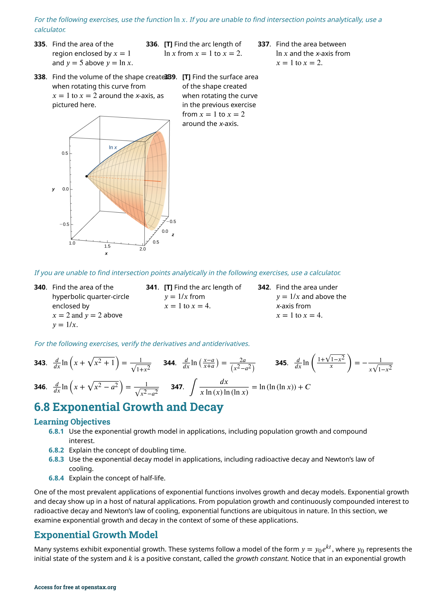
格林定理的威力在於：當你面對一個複雜的線積分時，可以轉換為相對簡單的二重積分；反之亦然。注意到被積函數 $\frac{\partial Q}{\partial x} - \frac{\partial P}{\partial y}$ 正是二維旋度（curl）的 $z$ 分量——這是格林定理與斯托克斯定理的連結點。
左邊 $\oint_C \mathbf{F} \cdot d\mathbf{r}$ 正是向量場沿 $C$ 的環流（circulation）。而右邊的 $\frac{\partial Q}{\partial x} - \frac{\partial P}{\partial y}$ 可理解為向量場在每個點的「微小環流密度」。格林定理告訴我們：總環流等於區域上所有微小環流的總和。
通量形式（Flux Form）
格林定理還有另一個等價形式——通量形式（flux form）：
通量形式是散度定理（第 6.8 節）在二維的特例，而環流形式是斯托克斯定理（第 6.7 節）在二維的特例。
(1) 曲線 $C$ 必須是封閉的——如果題目給定的是開放曲線，格林定理「直接」不適用。(2) $C$ 的定向必須是逆時針（正定向）——如果是順時針，結果要加負號。(3) 區域 $D$ 必須在 $C$ 的左側（對於正定向）。(4) 向量場分量必須在 $D$ 上有連續偏導數。
📝 範例 6.38：應用格林定理（矩形區域）
計算 $\oint_C (x^2y\,dx + xy^2\,dy)$，其中 $C$ 是頂點為 $(0,0),(1,0),(1,1),(0,1)$ 的矩形，逆時針定向。解：$P = x^2y$, $Q = xy^2$。$Q_x = y^2$, $P_y = x^2$。$\iint_D (y^2 - x^2)\,dA = \int_0^1\int_0^1 (y^2 - x^2)\,dx\,dy = \int_0^1 [y^2x - \frac{x^3}{3}]_0^1\,dy = \int_0^1 (y^2 - \frac{1}{3})\,dy = [\frac{y^3}{3} - \frac{y}{3}]_0^1 = 0$。
📝 範例 6.39：用格林定理計算功
計算力場 $\mathbf{F}(x,y) = \langle x^2y, -xy^2 \rangle$ 對沿圓 $x^2+y^2=4$ 逆時針移動的粒子做的功。解：$P = x^2y$, $Q = -xy^2$, $Q_x = -y^2$, $P_y = x^2$。$\iint_D (-y^2 - x^2)\,dA = -\iint_D (x^2+y^2)\,dA$。轉換為極坐標：$-\int_0^{2\pi}\int_0^2 r^2 \cdot r\,dr\,d\theta = -\int_0^{2\pi} [\frac{r^4}{4}]_0^2\,d\theta = -\int_0^{2\pi} 4\,d\theta = -8\pi$。
推廣至非單連通區域
格林定理可直接推廣到有洞的區域：只需沿所有邊界（外邊界逆時針、內邊界順時針）計算線積分，並在區域上進行二重積分。這個技巧在處理在原點有奇異點的向量場時特別有用。
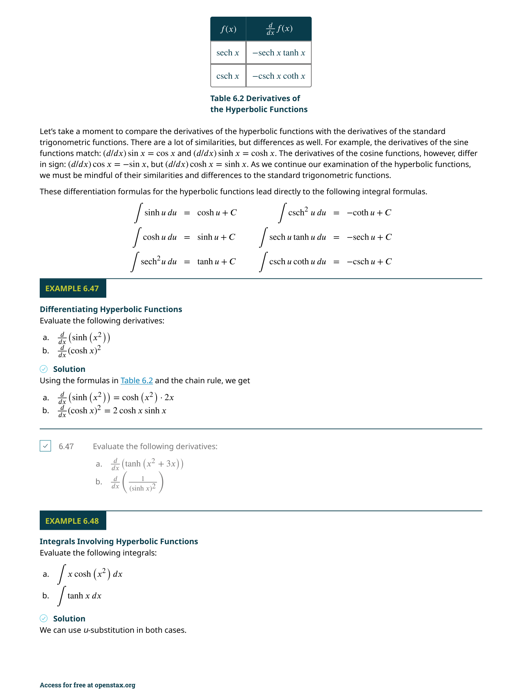
6.5 散度與旋度（Divergence and Curl）
散度（divergence）和旋度（curl）是作用於向量場的兩個基本運算。它們分別衡量向量場在一個點的「流出趨勢」和「旋轉趨勢」，在流體力學、電磁學和彈性理論中有核心應用。
散度（Divergence）
散度是一個純量函數，衡量向量場在一個點的「淨流出率」。在物理直覺中，若 $\mathbf{F}$ 是流體速度場，則 $\text{div}\,\mathbf{F}(P)$ 告訴我們在點 $P$ 處，流體是正在「膨脹」（正散度）、「收縮」（負散度）還是「不可壓縮」（零散度）。
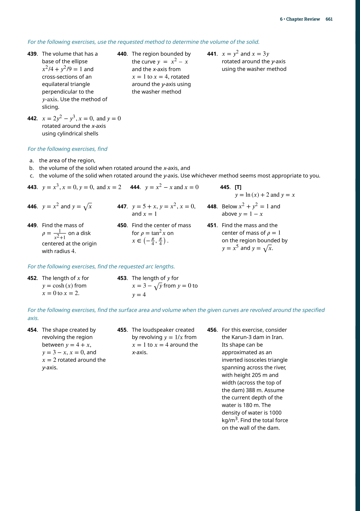
散度的幾何直覺：想像你在向量場中放置一個彈性圓圈。如果圓圈在流動中保持面積不變，散度為零。如果圓圈被「壓扁」失去面積，散度為負。如果圓圈被「撐開」增加面積，散度為正。
在物理學中，磁場 $\mathbf{B}$ 的散度恆為零：$\nabla \cdot \mathbf{B} = 0$。這反映了自然界中不存在「磁單極子」（孤立磁荷）的事實——磁力線總是形成封閉迴路，沒有起點也沒有終點。
旋度（Curl）
旋度是一個向量場，衡量向量場在一個點的「旋轉趨勢」。直覺上，若在向量場中放置一個微型槳輪（paddlewheel），旋度告訴你槳輪會如何旋轉以及旋轉軸的方向。
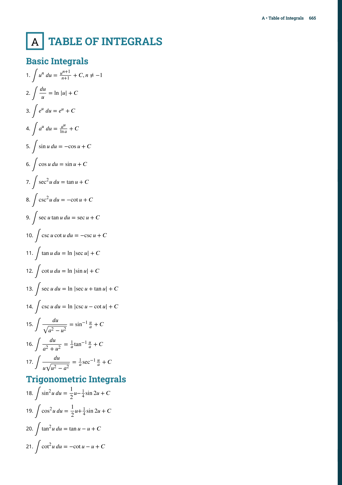
散度與旋度的關係
兩個極其重要的恆等式構成了向量微積分的骨架：
1. 梯度場的旋度恆為零：$\text{curl}(\nabla f) = \nabla \times (\nabla f) = \mathbf{0}$
2. 旋度場的散度恆為零：$\text{div}(\text{curl}\,\mathbf{F}) = \nabla \cdot (\nabla \times \mathbf{F}) = 0$
$\nabla$ 既可用來表示梯度（$\nabla f$，結果是向量場）、散度（$\nabla \cdot \mathbf{F}$，結果是純量場）、也可表示旋度（$\nabla \times \mathbf{F}$，結果是向量場）。初學者容易混淆這三種用法。記住：梯度作用在純量上產生向量，散度作用在向量上產生純量，旋度作用在向量上產生向量。
📝 範例 6.48：計算散度
若 $\mathbf{F}(x,y,z) = \langle x^2z, -2xz, yz \rangle$，求 $\text{div}\,\mathbf{F}$ 在點 $(2,-1,3)$ 的值。解：$P_x = 2xz$, $Q_y = 0$, $R_z = y$。$\text{div}\,\mathbf{F} = 2xz + 0 + y = 2(2)(3) + (-1) = 11$。在 $(2,-1,3)$ 處散度為正 11，若 $\mathbf{F}$ 代表流體速度，則該點處流體正在「流出」。
📝 範例 6.51：計算旋度
求 $\mathbf{F}(x,y,z) = \langle x^2y, xz, xyz \rangle$ 的旋度。解：$\text{curl}\,\mathbf{F} = \langle R_y - Q_z, P_z - R_x, Q_x - P_y \rangle = \langle xz - 0, 0 - yz, z - x^2 \rangle = \langle xz, -yz, z-x^2 \rangle$。
6.6 曲面積分（Surface Integrals）
線積分將積分從一維區間推廣到一維曲線；曲面積分（surface integral）則更進一步，將積分推廣到二維曲面上。正如線積分需要曲線的參數化，曲面積分需要曲面的參數化。
參數曲面
一個參數曲面（parametric surface）由兩個參數 $u, v$ 描述：$\mathbf{r}(u,v) = \langle x(u,v), y(u,v), z(u,v) \rangle$，其中 $(u,v)$ 在參數域（parameter domain）中變化。兩個參數是因為曲面是二維的。
圓柱 $x^2+y^2=a^2$：$\mathbf{r}(u,v) = \langle a\cos u, a\sin u, v \rangle$，$0 \leq u \leq 2\pi$，$v \in \mathbb{R}$
球面 $x^2+y^2+z^2=a^2$：$\mathbf{r}(\phi,\theta) = \langle a\sin\phi\cos\theta, a\sin\phi\sin\theta, a\cos\phi \rangle$
錐面 $z^2 = x^2+y^2$：$\mathbf{r}(u,v) = \langle u\cos v, u\sin v, u \rangle$
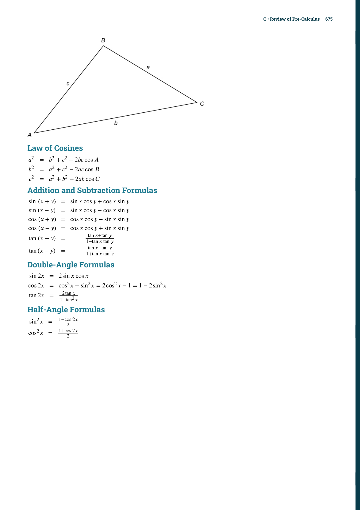
純量曲面積分
純量曲面積分 $\iint_S f(x,y,z)\,dS$ 將曲面 $S$ 分割成小塊，每塊面積為 $\Delta S_{ij}$，取樣本點並求和後取極限。計算的關鍵在於面積元素 $dS = |\mathbf{r}_u \times \mathbf{r}_v|\,du\,dv$：
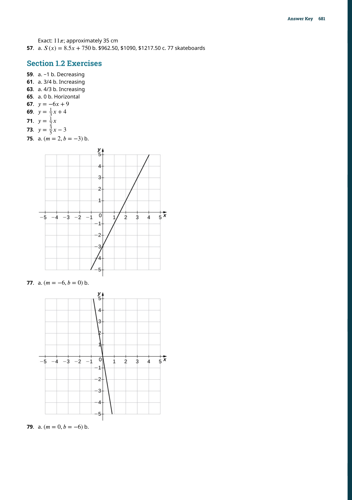
當 $f=1$ 時，$\iint_S 1\,dS$ 就是曲面 $S$ 的表面積（surface area）。這是一維弧長公式 $\int_C 1\,ds = \text{弧長}$ 的二維類比。
向量曲面積分（通量積分）
向量曲面積分，也稱為通量積分（flux integral），計算向量場穿越曲面的「流量」：$\iint_S \mathbf{F} \cdot d\mathbf{S} = \iint_S \mathbf{F} \cdot \mathbf{N}\,dS$，其中 $\mathbf{N}$ 是曲面的單位法向量。計算公式：
曲面積分要求曲面是可定向的（orientable）——即可以一致地定義「外側」和「內側」。大多數常見曲面（球面、圓柱面、平面）都是可定向的。但莫比烏斯帶（Möbius strip）是不可定向的經典反例：沿著帶面走一圈後，法向量會翻轉方向。
📝 範例 6.63：計算曲面面積
求曲面 $z = f(x,y) = x^2 + y^2$ 在圓盤 $x^2+y^2 \leq 1$ 上方的面積。解：使用參數化 $\mathbf{r}(x,y) = \langle x, y, x^2+y^2 \rangle$。$\mathbf{r}_x = \langle 1, 0, 2x \rangle$, $\mathbf{r}_y = \langle 0, 1, 2y \rangle$。$\mathbf{r}_x \times \mathbf{r}_y = \langle -2x, -2y, 1 \rangle$。$|\mathbf{r}_x \times \mathbf{r}_y| = \sqrt{4x^2+4y^2+1}$。轉換為極坐標：面積 $= \int_0^{2\pi}\int_0^1 \sqrt{4r^2+1}\,r\,dr\,d\theta = 2\pi[\frac{1}{12}(4r^2+1)^{3/2}]_0^1 = \frac{\pi}{6}(5\sqrt{5}-1)$。
6.7 斯托克斯定理（Stokes' Theorem）
斯托克斯定理（Stokes' theorem）是格林定理從平面到空間曲面的推廣。它將一個沿曲面邊界的線積分，轉換為該曲面上旋度的曲面積分。
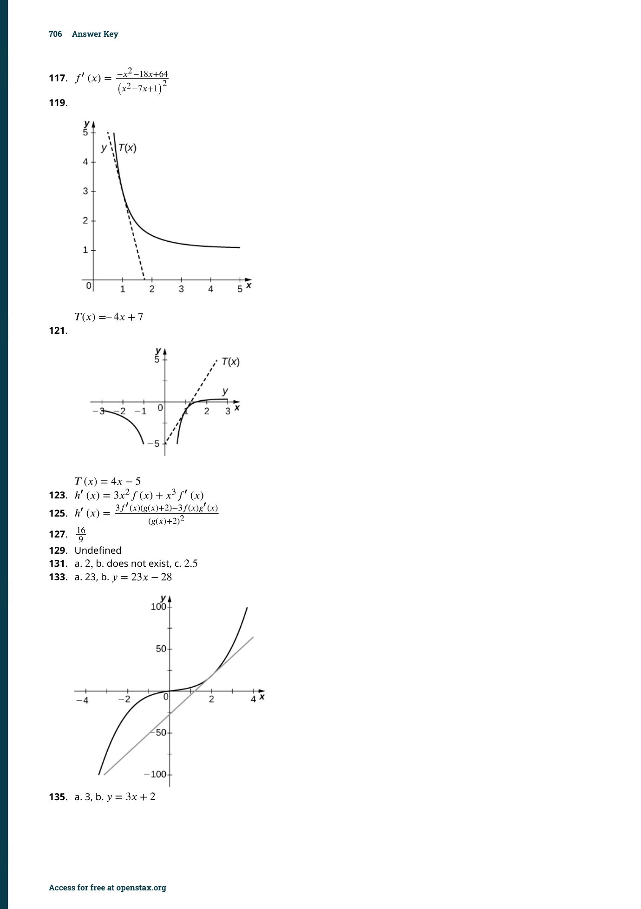
斯托克斯定理的核心訊息是：旋度在曲面上的「總累積」等於向量場沿邊界的環流。這與格林定理的精神完全一致——格林定理是斯托克斯定理在平面上的特例（當 $S$ 是 $xy$ 平面上的區域時，$\mathbf{N} = \mathbf{k}$，旋度的 $z$ 分量就是 $Q_x - P_y$）。
斯托克斯定理揭示了向量微積分中所有「基本定理」的統一模式：導數的積分 = 原函數在邊界上的值。一維：$\int_a^b f'(x)\,dx = f(b)-f(a)$；梯度：$\int_C \nabla f \cdot d\mathbf{r} = f(\text{終點}) - f(\text{起點})$；格林定理（環流）：$\iint_D (Q_x-P_y)\,dA = \oint_C \mathbf{F} \cdot d\mathbf{r}$；斯托克斯定理：$\iint_S (\nabla\times\mathbf{F})\cdot d\mathbf{S} = \oint_C \mathbf{F} \cdot d\mathbf{r}$。
應用斯托克斯定理時，最常出錯的是曲面邊界 $C$ 的定向。記住右手法則：如果你用右手拇指指向法向量 $\mathbf{N}$ 的方向，彎曲的四指所指的方向就是 $C$ 的正定向。如果方向搞反，結果就會差一個負號。
📝 範例 6.65：用斯托克斯定理計算線積分
用斯托克斯定理計算 $\oint_C \mathbf{F} \cdot d\mathbf{r}$，其中 $\mathbf{F}(x,y,z) = \langle -y^2, x, z^2 \rangle$，$C$ 是平面 $y+z=2$ 與圓柱 $x^2+y^2=1$ 的交線，逆時針定向（從上方看）。解：計算旋度：$\nabla \times \mathbf{F} = \langle 0, 0, 1+2y \rangle$。取曲面 $S$ 為平面 $y+z=2$ 在圓柱內的部分，向上定向：$\mathbf{N} = \frac{\langle 0,1,1 \rangle}{\sqrt{2}}$。通量積分 $= \iint_S (0,0,1+2y) \cdot \frac{\langle 0,1,1 \rangle}{\sqrt{2}}\,dS = \frac{1}{\sqrt{2}}\iint_S (1+2y)\,dS$。投影至 $xy$ 平面：$dS = \sqrt{2}\,dx\,dy$（因為 $z = 2-y$，$|\nabla(z+y-2)| = \sqrt{2}$）。因此積分 $= \iint_{x^2+y^2 \leq 1} (1+2y)\,dx\,dy$。由對稱性 $\iint 2y\,dx\,dy = 0$，所以 $= \iint 1\,dx\,dy = \pi$。
📝 範例 6.67：用斯托克斯定理計算曲面積分
用斯托克斯定理計算 $\iint_S (\nabla \times \mathbf{F}) \cdot d\mathbf{S}$，其中 $\mathbf{F} = \langle xz, yz, xy \rangle$，$S$ 是上半球面 $x^2+y^2+z^2=1, z \geq 0$，向上定向。解：由斯托克斯定理，該積分等於 $\oint_C \mathbf{F} \cdot d\mathbf{r}$，其中 $C$ 是單位圓 $x^2+y^2=1$ 在 $xy$ 平面上的邊界（$z=0$）。在 $C$ 上，$z=0$，所以 $\mathbf{F} = \langle 0, 0, xy \rangle$。$\mathbf{r}(t) = \langle \cos t, \sin t, 0 \rangle$，$\mathbf{r}'(t) = \langle -\sin t, \cos t, 0 \rangle$，$\mathbf{F} \cdot \mathbf{r}' = 0$。因此線積分 $= \int_0^{2\pi} 0\,dt = 0$。
斯托克斯定理是格林定理從平面到曲面的三維推廣。它告訴我們：向量場沿封閉曲線 $C$ 的環流量等於旋度通過以 $C$ 為邊界的曲面 $S$ 的通量。
幾何直覺：想像一個小風車放在向量場中——旋度測量風車的旋轉趨勢。斯托克斯定理說：邊界上的總環流 = 所有內部小風車旋轉的總和。內部反向旋轉互相抵消，只剩下邊界的淨效應。
應用：斯托克斯定理在電磁學中至關重要——Faraday 定律的積分形式 $\oint \mathbf{E}\cdot d\mathbf{r} = -\frac{d}{dt}\iint \mathbf{B}\cdot d\mathbf{S}$ 直接使用斯托克斯定理連結變化的磁場與感應電場。
6.8 散度定理（The Divergence Theorem）
散度定理（divergence theorem），也稱為高斯定理（Gauss's theorem），是向量微積分中最後一個、也是維度最高的「基本定理」。它將一個封閉曲面上的通量積分，轉換為該曲面所圍體積上的散度三重積分。
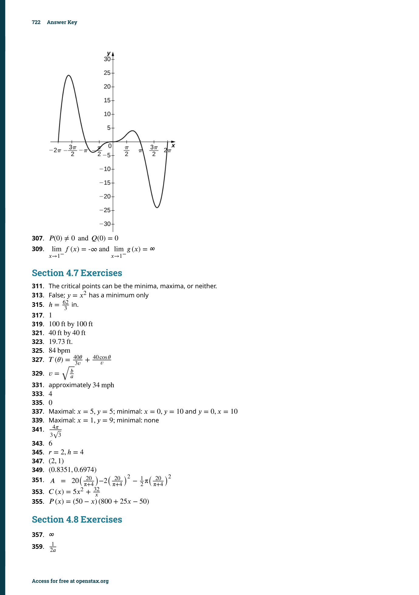
散度定理的物理意義極其深刻：一個區域內所有「源」（source，正散度）和「匯」（sink，負散度）的總和，等於穿越該區域邊界的淨流量。如果區域內沒有源或匯（散度處處為零），進入的流量就等於出去的流量。
微積分基本定理的完整體系
散度定理完成了向量微積分基本定理的最後一塊拼圖：
| 定理 | 邊界積分 | 區域積分 | 「導數」 |
|---|---|---|---|
| 微積分基本定理 | $f(b)-f(a)$ | $\int_a^b f'(x)\,dx$ | $f'$ |
| 線積分基本定理 | $f(B)-f(A)$ | $\int_C \nabla f \cdot d\mathbf{r}$ | $\nabla f$ |
| 格林定理（環流） | $\oint_C \mathbf{F} \cdot d\mathbf{r}$ | $\iint_D (Q_x-P_y)\,dA$ | $\text{curl}\,\mathbf{F}$ |
| 格林定理（通量） | $\oint_C \mathbf{F} \cdot \mathbf{N}\,ds$ | $\iint_D \text{div}\,\mathbf{F}\,dA$ | $\text{div}\,\mathbf{F}$ |
| 斯托克斯定理 | $\oint_C \mathbf{F} \cdot d\mathbf{r}$ | $\iint_S (\nabla\times\mathbf{F})\cdot d\mathbf{S}$ | $\text{curl}\,\mathbf{F}$ |
| 散度定理 | $\iint_S \mathbf{F} \cdot d\mathbf{S}$ | $\iiint_E \text{div}\,\mathbf{F}\,dV$ | $\text{div}\,\mathbf{F}$ |
所有這些定理都可以用一個符號公式概括：$\int_{\partial \Omega} \omega = \int_{\Omega} d\omega$，其中 $\Omega$ 是區域，$\partial\Omega$ 是其邊界，$d\omega$ 是「外微分」（exterior derivative）。這是微分形式（differential forms）理論的核心，也是現代微分幾何的基礎。
(1) 曲面 $S$ 必須是封閉的（完全包圍一個立體）——如果題目給的是開放曲面，散度定理不適用（應改用斯托克斯定理）。(2) 定向必須是向外。(3) 向量場必須在立體 $E$ 上有連續偏導數。注意散度定理不要求$E$ 是單連通的——球殼（空心球）的邊界有兩個曲面（外球面和內球面），兩者都要積分。
📝 範例 6.72：用散度定理計算通量
用散度定理計算 $\iint_S \mathbf{F} \cdot d\mathbf{S}$，其中 $\mathbf{F}(x,y,z) = \langle x, y, z \rangle$，$S$ 是單位球面 $x^2+y^2+z^2=1$，向外定向。解：$\text{div}\,\mathbf{F} = 1+1+1 = 3$。由散度定理，$\iint_S \mathbf{F} \cdot d\mathbf{S} = \iiint_E 3\,dV = 3 \times \text{球體積} = 3 \times \frac{4\pi}{3} = 4\pi$。
📝 範例 6.73：電場的高斯定律
點電荷 $q$ 在原點產生的電場為 $\mathbf{E} = \frac{q}{4\pi\epsilon_0}\frac{\mathbf{r}}{|\mathbf{r}|^3}$。證明穿越任何包圍原點的封閉曲面的電通量為 $\frac{q}{\epsilon_0}$。解：$\text{div}\,\mathbf{E} = \frac{q}{\epsilon_0}\delta(\mathbf{r})$（在原點以外散度為零）。因此對於任何包圍原點的封閉曲面，通量 $= \iiint_E \text{div}\,\mathbf{E}\,dV = \frac{q}{\epsilon_0}$。這就是高斯定律（Gauss's Law）。
散度定理（又稱 Gauss 定理）是三維的「淨流出 = 內部源總和」陳述。如果向量場代表流體流速，散度測量每個點是「源」（流體湧出）還是「匯」（流體吸入）。
物理意義：Gauss 定律 $\oiint \mathbf{E}\cdot d\mathbf{S} = \frac{Q_{enc}}{\epsilon_0}$ 是散度定理在電磁學中的直接應用——電場通過封閉曲面的總通量等於內部總電荷除以介電常數。散度定理是將局部物理定律（微分形式）轉換為全局守恆定律（積分形式）的橋樑。
📋 關鍵概念回顧（Key Concepts）
- 向量場：$\mathbf{F}(x,y) = \langle P(x,y), Q(x,y) \rangle$ 為平面上每個點賦予一個向量——可想像為流體速度場或力場
- 線積分（純量）：$\int_C f\,ds$ 沿曲線對純量函數積分——弧長元素 $ds = \sqrt{(dx/dt)^2+(dy/dt)^2}\,dt$
- 線積分（向量）：$\int_C \mathbf{F} \cdot d\mathbf{r} = \int_C P\,dx + Q\,dy$——物理上表示力沿路徑所作的功
- 保守場與位勢函數：若 $\mathbf{F} = \nabla f$，則 $\mathbf{F}$ 是保守場——線積分與路徑無關，僅由起點終點決定；$\oint_C \mathbf{F}\cdot d\mathbf{r}=0$ 對任何閉曲線成立
- Green 定理：$\oint_C P\,dx+Q\,dy = \iint_D (Q_x - P_y)\,dA$——將沿閉曲線的線積分轉換為平面區域上的二重積分
- 旋度：$\text{curl}\,\mathbf{F} = \nabla \times \mathbf{F}$——衡量向量場在點附近的旋轉趨勢；在平面場中 $\text{curl}\,\mathbf{F} = Q_x - P_y$
- 散度：$\text{div}\,\mathbf{F} = \nabla \cdot \mathbf{F} = P_x + Q_y + R_z$——衡量向量場在點附近的「源」或「匯」強度
- Stokes 定理：$\oint_C \mathbf{F}\cdot d\mathbf{r} = \iint_S (\nabla \times \mathbf{F})\cdot d\mathbf{S}$——將空間閉曲線的線積分轉換為曲面上的面積分（Green 定理的三維推廣）
- 散度定理：$\iint_S \mathbf{F}\cdot d\mathbf{S} = \iiint_E \text{div}\,\mathbf{F}\,dV$——將通過封閉曲面的通量轉換為體內的三重積分（也稱 Gauss 定理）
📐 關鍵公式（Key Equations）
| 公式 | 說明 |
|---|---|
| $$\int_C \mathbf{F}\cdot d\mathbf{r} = \int_a^b \mathbf{F}(\mathbf{r}(t))\cdot \mathbf{r}'(t)\,dt$$ | 向量線積分（參數形式） |
| $$\oint_C P\,dx+Q\,dy = \iint_D (Q_x-P_y)\,dA$$ | Green 定理 |
| $$\text{curl}\,\mathbf{F} = \nabla \times \mathbf{F}$$ | 旋度 |
| $$\text{div}\,\mathbf{F} = \nabla \cdot \mathbf{F} = P_x+Q_y+R_z$$ | 散度 |
| $$\oint_C \mathbf{F}\cdot d\mathbf{r} = \iint_S (\nabla \times \mathbf{F})\cdot d\mathbf{S}$$ | Stokes 定理 |
| $$\iint_S \mathbf{F}\cdot d\mathbf{S} = \iiint_E \text{div}\,\mathbf{F}\,dV$$ | 散度定理（Gauss） |
本章摘要
本章建立了向量微積分的完整體系，從向量場的定義一路到最強大的兩個定理——斯托克斯定理和散度定理。以下是八個最重要的觀念：
- 向量場是每個點對應一個向量的映射——徑向場和旋轉場是兩大基本類型
- 線積分沿曲線對向量場積分——純量線積分與參數化無關，向量線積分依賴定向
- 保守場是梯度場——其線積分只依賴端點（基本定理），環流為零
- 格林定理將平面封閉曲線上的線積分轉換為二重積分——環流形式用旋度，通量形式用散度
- 散度衡量「流出性」，旋度衡量「旋轉性」——兩者透過 $\nabla$ 運算子優雅表達
- 曲面積分將積分推廣到二維曲面——需要參數化和面積元素 $|\mathbf{r}_u \times \mathbf{r}_v|$
- 斯托克斯定理：$\oint_C \mathbf{F} \cdot d\mathbf{r} = \iint_S (\nabla\times\mathbf{F})\cdot d\mathbf{S}$——格林定理的三維推廣
- 散度定理：$\iint_S \mathbf{F} \cdot d\mathbf{S} = \iiint_E (\nabla\cdot\mathbf{F})\,dV$——封閉曲面通量 = 內部散度總和
| 概念 | 公式 / 定義 | 物理意義 |
|---|---|---|
| 線積分（純量） | $\int_C f\,ds = \int_a^b f(\mathbf{r}(t))|\mathbf{r}'(t)|dt$ | 「幕簾」面積 |
| 線積分（向量） | $\int_C \mathbf{F}\cdot d\mathbf{r} = \int_a^b \mathbf{F}\cdot\mathbf{r}'\,dt$ | 功（work） |
| 位勢函數 | $\mathbf{F} = \nabla f$ | 能量守恆系統 |
| 散度 | $\nabla\cdot\mathbf{F} = P_x + Q_y + R_z$ | 流出率 |
| 旋度 | $\nabla\times\mathbf{F} = \langle R_y-Q_z, P_z-R_x, Q_x-P_y \rangle$ | 旋轉趨勢 |
| 曲面積分（通量） | $\iint_S \mathbf{F}\cdot d\mathbf{S} = \iint_D \mathbf{F}\cdot(\mathbf{r}_u\times\mathbf{r}_v)\,dudv$ | 流體穿越量 |
⚠️ 初學者常見錯誤
$\int_C f(x,y)\,ds$（純量線積分）和 $\int_C \mathbf{F} \cdot d\mathbf{r}$（向量線積分）是兩個不同的概念。前者與曲線的定向無關，後者與定向有關（反向走會變號）。計算時：純量線積分需要 $|\mathbf{r}'(t)|$（弧長元素），向量線積分需要 $\mathbf{r}'(t)$（切向量本身）。很多學生在兩者之間搞混，導致使用了錯誤的公式。
交叉偏導數相等（$P_y = Q_x$）是保守場的必要條件，但僅在單連通區域上才是充分條件。經典反例：$\mathbf{F}(x,y) = \langle \frac{-y}{x^2+y^2}, \frac{x}{x^2+y^2} \rangle$ 在 $\mathbb{R}^2\setminus\{(0,0)\}$（非單連通！）上滿足 $P_y = Q_x$，但沿單位圓的環流為 $2\pi \neq 0$。判別保守場的正確步驟：(1) 檢查 $P_y = Q_x$；(2) 確認定義域是單連通的——兩者缺一不可。
格林定理要求 (1) 曲線必須封閉，(2) 定向必須逆時針（若順時針則結果取負），(3) 向量場在區域上有連續偏導數。常見錯誤包括：對非封閉曲線使用格林定理、忽略定向導致符號錯誤、在有奇異點的區域上不當使用（如原點有 $\frac{1}{x^2+y^2}$ 形式的奇異點）。
散度定理適用於封閉曲面包圍的立體（三維），將通量轉換為三重積分。斯托克斯定理適用於以封閉曲線為邊界的曲面（二維），將線積分轉換為曲面積分。一個簡單的判別法：問題給的是封閉曲面 → 散度定理；問題給的是封閉曲線（空間中）→ 斯托克斯定理；平面上的封閉曲線 → 格林定理。
在計算向量曲面積分時，$\mathbf{r}_u \times \mathbf{r}_v$ 給出的法向量方向取決於參數的順序。如果要改變定向，只需將 $u$ 和 $v$ 互換（使外積變號），或在結果前加負號。特別注意：對於封閉曲面（如球面），「向外」定向要求法向量指向遠離物體的方向——檢查方法是代入一個簡單點驗證法向量是否指向外。
✅ 自我檢測（Self-Check）
完成以下題目檢驗你對本章核心概念的掌握程度。點擊展開查看答案。
題 1：向量線積分
計算線積分 $\displaystyle \int_C \mathbf{F} \cdot d\mathbf{r}$，其中 $\mathbf{F} = \langle y,\; -x \rangle$，$C$ 為單位圓 $x^2+y^2=1$，逆時針方向走一圈。
答案：
參數化：$\mathbf{r}(t) = \langle \cos t,\; \sin t \rangle$，$0 \le t \le 2\pi$。
$\mathbf{F}(\mathbf{r}(t)) = \langle \sin t,\; -\cos t \rangle$，$\mathbf{r}'(t) = \langle -\sin t,\; \cos t \rangle$。
$\mathbf{F} \cdot d\mathbf{r} = (\sin t)(-\sin t) + (-\cos t)(\cos t) = -\sin^2 t - \cos^2 t = -1$。
$\int_0^{2\pi} (-1)\,dt = -2\pi$。
題 2：保守場判別與勢函數
判斷 $\mathbf{F} = \langle 2xy,\; x^2 \rangle$ 是否為保守場。若是，求勢函數 $f$ 使得 $\nabla f = \mathbf{F}$。
答案：
檢查 $P_y = Q_x$：$P_y = \frac{\partial}{\partial y}(2xy) = 2x$，$Q_x = \frac{\partial}{\partial x}(x^2) = 2x$。相等，且定義域 $\mathbb{R}^2$ 單連通，故為保守場。
求 $f$：$f_x = 2xy \Rightarrow f = x^2y + g(y)$。$f_y = x^2 + g'(y) = x^2 \Rightarrow g'(y) = 0$，$g(y) = C$。
因此 $f(x,y) = x^2y + C$。
題 3：Green 定理的應用
用 Green 定理計算 $\displaystyle \oint_C (x^2y\,dx - xy^2\,dy)$，其中 $C$ 為單位圓 $x^2+y^2=1$，逆時針方向。
答案：
$P = x^2y$，$Q = -xy^2$。$Q_x - P_y = (-y^2) - (x^2) = -(x^2+y^2)$。
Green 定理：$\oint_C P\,dx + Q\,dy = \iint_D (Q_x - P_y)\,dA = \iint_D -(x^2+y^2)\,dA$。
極座標：$-\int_0^{2\pi}\int_0^1 r^2 \cdot r\,dr\,d\theta = -2\pi \cdot \frac{1}{4} = -\frac{\pi}{2}$。
題 4：散度與旋度的計算
對於向量場 $\mathbf{F} = \langle x^2,\; yz,\; xz \rangle$，計算 (a) 散度 $\nabla \cdot \mathbf{F}$；(b) 旋度 $\nabla \times \mathbf{F}$。
答案：
(a) $\nabla \cdot \mathbf{F} = \frac{\partial}{\partial x}(x^2) + \frac{\partial}{\partial y}(yz) + \frac{\partial}{\partial z}(xz) = 2x + z + x = 3x + z$。
(b) $\nabla \times \mathbf{F} = \begin{vmatrix} \mathbf{i} & \mathbf{j} & \mathbf{k} \\ \partial_x & \partial_y & \partial_z \\ x^2 & yz & xz \end{vmatrix}$
$= \langle 0 - y,\; 0 - z,\; 0 - 0 \rangle = \langle -y,\; -z,\; 0 \rangle$。
題 5：定理選擇判斷
下列三種情況分別應使用哪個定理（Green / Stokes / 散度定理）？
(a) 計算封閉曲面上的通量積分 $\iint_S \mathbf{F} \cdot d\mathbf{S}$。
(b) 計算平面上封閉曲線的環流量 $\oint_C \mathbf{F} \cdot d\mathbf{r}$。
(c) 計算空間中以封閉曲線為邊界的曲面上的旋度積分。
答案：
(a) 散度定理（Divergence Theorem）：$\iint_S \mathbf{F}\cdot d\mathbf{S} = \iiint_E \nabla\cdot\mathbf{F}\,dV$。
(b) Green 定理：$\oint_C \mathbf{F}\cdot d\mathbf{r} = \iint_D (\nabla\times\mathbf{F})\cdot\mathbf{k}\,dA$。
(c) Stokes 定理：$\oint_C \mathbf{F}\cdot d\mathbf{r} = \iint_S (\nabla\times\mathbf{F})\cdot d\mathbf{S}$。
三者統一框架：「邊界上的積分 = 內部導數的積分」。
📚 延伸資源與學習建議
- 3Blue1Brown — Divergence and Curl：YouTube 系列視覺化解釋散度與旋度的物理直覺，強烈推薦
- Khan Academy — Multivariable Calculus：互動練習涵蓋線積分、格林定理、斯托克斯定理
- MIT 18.02 — Multivariable Calculus：經典的 OCW 課程，對向量微積分有深入講解
- Paul's Online Notes — Calculus III：含大量例題和詳細解題步驟
- GeoGebra 3D：可互動視覺化向量場、參數曲面和線積分
- 練習建議：本章的定理雖然眾多，但有一個統一的模式——「導數的積分 = 邊界上的值」。試著對每個定理辨認：(1) 什麼是「導數」？(2) 什麼是「區域」？(3) 什麼是「邊界」？這個框架會幫助你建立整體理解。
- 下一章預告：第 7 章 — 二階微分方程將把微積分應用於彈簧振動、電路分析等動力系統